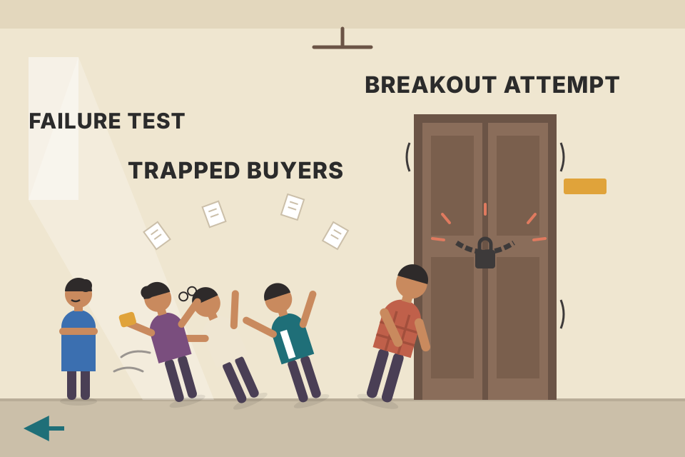
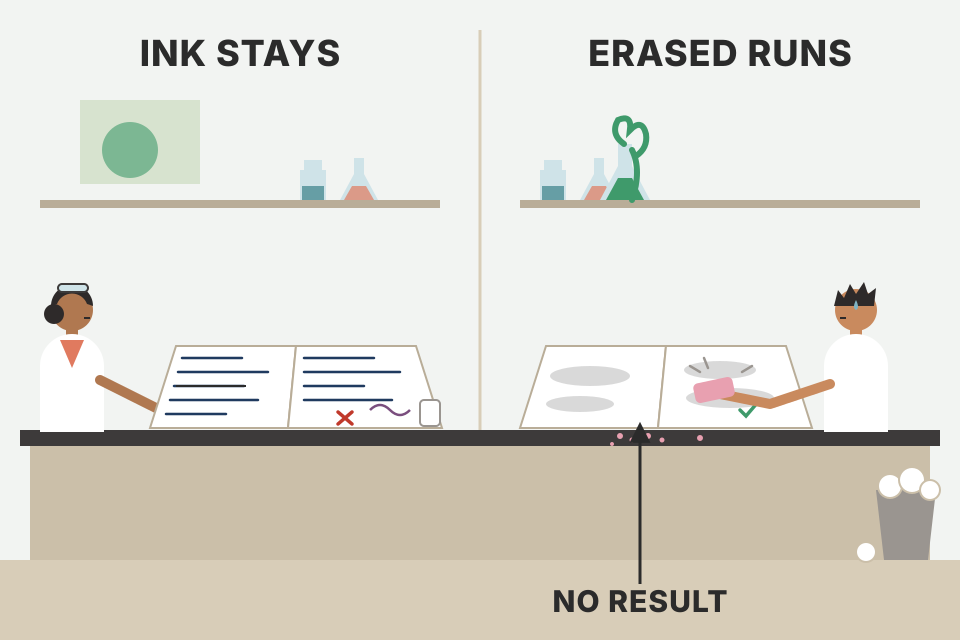
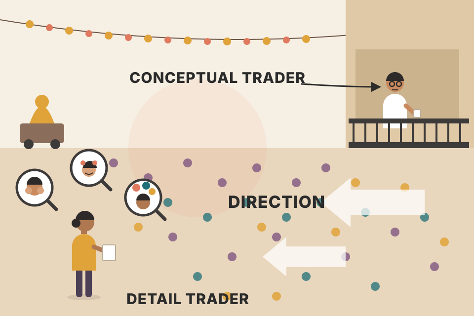
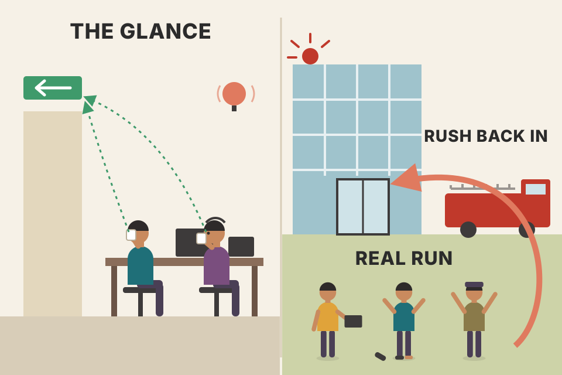

A price pokes past a line that everyone is watching. It finds no new buyers there and falls back. That poke is the failure test. This page teaches Module 6 in the workbook's order. You test the pattern on old charts. You practise it on paper before using money.
You learn to check the classic chart shapes without fooling yourself. You walk through a century of Dow history. Then come Grimes's essays. They cover what chart reading can and cannot do, and how unsure every forecast is. They separate strategy from tactics. They show how to read what price does next.
Every price chart here is simulated. Each was built to show one idea. None of it is evidence about real markets.
Picture a share that has climbed to ₹500 three times this month. Each time it turned back. Everyone can see that line now. Traders call it resistance: a price where rises have stopped before.
On Thursday the share pushes through and touches ₹506. It looks like the big break at last. Some traders buy at once. Others had bet on a fall, and they now give up and buy back. For a few minutes there is a rush of buying.
Then the rush ends, and nobody new comes in to buy. The share slides and closes the day at ₹497, back under the line. Everyone who bought above ₹500 is now losing money. Many will sell, and that selling pushes price lower.
That is a failure test. Price tests a line and fails to get through. The trade is to bet on the fall, at the close. Your exit, if you are wrong, sits a little above ₹506.
Grimes does not ask you to trust this. You test the pattern on old charts and count the results. Then you practise it on paper with live prices. The second half of the chapter is a set of his essays. They explain why he tests every idea, and where judgment still has a place.
| Word | What it means, in plain words |
|---|---|
| Support and resistance | Support is a price where falls have stopped before. Resistance is a price where rises have stopped before. Either one is called a level. |
| Breakout | Price moves beyond a level and keeps going. |
| Failure test | Price moves beyond a level, cannot stay there, and comes back. It is a breakout that failed. |
| Long and short | Long means you bought and you gain if price rises. Short means you sold first and you gain if price falls. |
| Stop | The price where you give up and get out. You pick it before you enter. |
| R | The money you planned to lose if the stop is hit. A win of 2R made twice that amount. |
| Countertrend | A trade against the direction price has been moving. |
| Bar and close | A bar is the drawing of one slice of trading, such as one day. It shows the open, high, low and close. The close is the last price of that slice. |
| Backtest | Trying your rules on old price data, to see how they would have done. |
| Papertrading | Trading a pretend account on live prices. No real money is at risk. |
| Edge | A real advantage that repeats. Over many trades you come out ahead of plain luck. |
| Followthrough | What price does after the pattern. Good followthrough means price keeps going your way soon after. |
This is a workbook, so the homework comes first (sections 02 to 06). The essays follow (sections 08 to 13). Want more of the trade itself first? Read section 01, then jump to sections 14 to 17, then come back.
The module has two halves.
The first half is course work. You get a pattern to test and a way to test it on live prices, called papertrading. You also get a research project and a long look at market history.
The second half is a set of readings and blog essays. They explain why Grimes tests everything, and how he still uses judgment. The failure test runs through both halves.
A share has stopped at ₹500 three times. On the fourth try it gets through and touches ₹506. By the close it is back at ₹497. What happened?
Grimes calls this a failure test. You need two words first. Support is a price where falls have stopped before. Resistance is a price where rises have stopped before. Traders call either one a level.
In a failure test, price pushes beyond support or resistance, and the push fails. So the pattern is two things at once. It is a test of the level. And it is a failure to break it.
Grimes is clear that he did not invent it. Wyckoff described the same thing long ago. He called a false break under support a spring. He called a false break over resistance an upthrust.
Victor Sperandeo calls it a 2B entry. The workbook spells his name "Sperendeo". Other authors have written about it too. Grimes calls it a simple, lasting piece of market behaviour.
It is often an aggressive countertrend trade. Countertrend means you bet against the direction price has been moving. Here you bet against the push.
Even if you never trade it, watch for it. Failures often mark the end of a trend, at least for the short term. Sometimes they mark a major turning point.
The module intro lists four more things.
Papertrading. This is trading a pretend account, with no real money on the line. Critics call it worthless, because it cannot copy the emotions of real money. Grimes agrees that emotions are where many traders get stuck. But he says papertrading still has a purpose.
Done properly, it is one more statistical check of your edge. An edge is a real advantage that repeats over many trades. One thing is fairly certain. If you cannot make money on paper, you will not make it with real money. He calls papertrading an important stage in a trader's growth.
Basic statistics. You learn a few numbers that measure a trader's performance, and how they change over time. Grimes says this is far from a full study of a trading programme. But it is enough to judge the basic quality of an edge.
Classical charting. This is the old school of reading chart shapes. You get a deep look at its history, with examples from the original sources. You see the uses and the limits of the patterns. Knowing the market forces behind a pattern helps you understand how markets behave.
Market history. You study nearly a century of the US stock market. By now you can read patterns in three ways. You can look for supply/demand imbalances, which means more buyers than sellers or the reverse. You can look for surprises. And you can think in probabilities.

Someone pushes a door that looks locked. If it swings open, they walk through. That is a breakout. If it rattles and stays shut, everyone who leaned on it stumbles back. The failure test is the rattle. The push happened and nothing gave way. Now the people who bet on the door opening have to back out.
Where the picture breaks: a door is either open or shut. A price level is fuzzier. Price can fail today and still get through next week.
Now watch one form, bar by bar. A bar is the drawing of one slice of trading, such as one day. Choose the upthrust or the spring, then press "Next bar".
Many people can see the same level. So orders pile up a little beyond it. Two kinds of order wait there.
The first kind is the stop-loss, or stop. It is an order to get out if price reaches a set point. Traders on the wrong side keep their stops there. The second kind is the breakout entry. A breakout is a move through a level that keeps going. Some traders wait to buy the moment the break comes.
The push through the level sets off both kinds of order. Take an upthrust. For a moment there is a burst of buying.
Then comes the question. Do fresh buyers keep coming? If not, nothing is left to hold price up. The stops and the breakout buys were a one-time burst.
Now the people who bought the break are losing money. They turn into sellers. The close back inside the level is the first sign that the burst found no follow-up.
Section 16 is Grimes's own account of this.
vwap_volume_profile_explained.md describes a liquidity sweep as "a false break of an old high/low". That is the same pattern under a newer name. In your backtest the full checklist (sweep + higher-timeframe) was better in 26 of 36 pairs.Does the failure test make money? You do not guess. You count. A backtest tries your rules on old price data, to see how they would have done.
By now this should feel routine. You did it for the pullback, which is a short dip inside a trend. You did it for the anti, the pattern from Module 5.
The failure test is simple and clear-cut. But it has a problem. It often sets up countertrend, against the way price has been moving. When it fails, it can produce stunning, dramatic losses.
So it may need different psychology and different trade management from the with-trend pullbacks you tested first. While you test, judge two things. One is the objective results. The other is how comfortable you would have felt taking each trade.
Grimes adds three notes:
Record your results and study them with basic trading statistics. The workbook points to "Unit 4 of this Module" for these. The readings in section 07 give the pages in Grimes's main book.
The workbook does not print a rule set. Here is one to start from. Two words first. A stop is the price where you give up and get out. R is the amount you risk on the trade: the gap between your entry and your stop.
The tool below runs these rules on thousands of simulated bars. Change the market type and the sliders, and watch the results move.
A test is only as honest as the prices you feed it. So look at what each simulated market is made of.
Random walk. Each bar is a coin flip. There are no stop clusters and no memory, so no force pays for the trade. In my runs it comes out slightly negative, around −0.1R per trade. Three small costs cause that. The same-bar rule is pessimistic. Some bars gap through the stop. And the stop sits very close to the close.
Mean-reverting. This market is built to pull price back toward the middle of each range. So betting against a failed break earns something here. It makes roughly +0.15 to +0.4R with 20–40-bar levels. With 10-bar levels it makes about zero.
Trending. This market punishes the trade, by roughly −0.25 to −0.35R. That is Grimes's warning about countertrend losses, in numbers.
Watch the worst trade too. Gaps make some losses bigger than −1R. Setups that risk under 0.1% of price are skipped.
None of this is evidence about real markets. The edge in each simulated market is whatever I built into it. What you take away is the method. It is ready for your NSE data.
This list is not in the workbook pages. I added it.
Your trading_equations.md has the expectancy formula with a worked example. It uses 51.5% wins at 2R, which gives 0.545R per trade.
Your backtest_results_summary.md notes one more thing. Every losing run had a win rate below its break-even point, p* = (L + c)/(W + L).
Imagine a cricketer who only ever bats in the nets. Is that practice worthless, because no crowd is watching? Many trading teachers say exactly that about papertrading, which is trading a pretend account with no real money.
The usual view gets two things right. The hardest problems in trading are probably psychological and emotional. And papertrading does nothing to copy those emotions. Then the usual view makes a wrong jump. It decides that papertrading is worthless.
Grimes says the confusion comes from not knowing what to do with it. Papertrading is a forward test of your edge. An edge is a real advantage that repeats over many trades.
A backtest always looks back at old data. A papertrade does the same kind of testing on live data. So you face the unknown future at every step.
A profitable paper record does not guarantee real profits. Plenty of people trade well on paper and lose when they go live. But the other direction is close to certain. If you cannot make money papertrading, you are unlikely to make it with real money.
Take it very seriously. Anything that adds emotional "charge" or accountability helps. Working in a community and sharing your results is one way.
And never recreate history. It is tempting to look at a bad decision from a few days ago and quietly change it. You tell yourself "what if I had only waited". Do not do this. Changing even one past decision makes the whole record worthless.
The module covers the method in detail later. For now Grimes gives four reminders:
The chart below shows why the "never recreate history" rule matters. Move the first slider and watch a worthless system start to look good.

A lab notebook. You can write tomorrow's experiment however you like. But once a result is written, it stays. A scientist who rubs out the failed runs does not have a better result. They have no result.
Where the picture breaks: a lab can repeat the same experiment. A trading day comes once and never comes back.
The chart holds 60 simulated trades. They are built to have zero edge. 40% are winners at +1.5R. 60% are losers at −1R. Over many trades that adds up to nothing.
Each "edit" turns one of the worst losses into a skipped trade. That is the kind of change "what if I had only waited" makes. A handful of edits turns a coin-flip system into one that looks good.
Slippage does the reverse. A few hundredths of R looks tiny on one trade. Over many trades it is large. That is why Grimes asks you to be pessimistic about fills.
backtest_results_summary.md already ends with a papertrading list. It has momentum rotation + weekly pullback for 3–6 months. It has the 5-min ORB long + short only as "a lead to paper trade, not proven". This section is the method for doing that honestly.Old chart books are full of named shapes. Head and shoulders is one: three peaks, with the middle one highest. Double top is another. This school is called classical charting. Do these shapes really give you an edge?
The course has shown many of them. This project asks you to look for the statistical edge behind some. Grimes warns of two complications first:
Write clear rules for spotting the patterns. Move through charts bar by bar, and mark each pattern as it appears.
Be very careful that no future information leaks in. Even one glance ahead at the chart makes the test worthless.
Keep pretend papertrading records of trades around the patterns. You can also build the research as an event study. That is a count of what price does after each event, compared with normal times. You can do it by hand, or let a program check the patterns.
The aim is insight into the edge behind the patterns. You may also find patterns for your own trading plan later.
How bad is one glance ahead? The chart below measures it.
The chart tests one idea: "buy at a pivot low". A pivot low is a bar whose low is lower than the bars on both sides of it.
The test runs on 300 simulated random walks. In a random walk every step is a coin flip. So no strategy can have an edge there.
Here is the catch. You only know a pivot low k bars later, once the next k lows are all higher.
The "peeked" version buys at the pivot bar itself. It uses knowledge it could not have had. The "honest" version buys when the pivot is confirmed.
The peeked version shows a big edge out of pure noise. The honest one does the same as buying any bar.
That is how one glance ahead poisons a test done by hand. Your eye has already seen which lows held.
The workbook names the event study but does not spell it out. These steps are mine.
backtest_results_summary.md). That is the same discipline against future information, done by machine.How bad was 1929, really? How does a market behave after a crash like 1987? This section lets you look for yourself.
The Dow Jones Industrial Average is the oldest well-known index of US shares. The workbook prints weekly charts of its whole history. On a weekly chart, each bar is one week.
Most charts cover one decade, from a "zero year" to the same year ten years later. Two more charts are snapshots centred on the 1929 and 1987 crashes. They let you connect what came after to those shocks.
Below each decade chart is a block of summary statistics. Grimes makes four suggestions:
Two of these need a little more. On the tools: traders often make naive assumptions that do not survive real trading. Deep study of history is a first line of defence. You learn what the tools can do, and what they cannot.
On the events: many of them shaped culture and thought for decades. But the market's response may not be what you expect. Grimes does not claim the list is complete, or even the most relevant. It is a starting point.
The first chart (pdf p216) shows the start of the Dow. It matters for a second reason. In that early market Charles Dow wrote his early Wall Street Journal editorials. Most of classical technical analysis was drawn from it.
The 1929 snapshot (pdf p219) is shown without commentary. It is there to make you feel the size of the crash and the decline after it. Grimes asks you to think of the moves in percentages. Then you see how deeply the event marked people's minds.
The 1987 snapshot (pdf p225) shows the action after the extreme selloff. Its causes are still not fully understood. Grimes calls the chart a good template for a market dealing with a large, violent shock.
Pick a decade below. The numbers are the workbook's own. The notes after the charts explain the short labels.
Two words first. Volatility is how much price jumps around. The sign σ (sigma) stands for standard deviation, the usual size of one day's move. A "3σ day" moved three times the usual amount.
Three patterns jump out of the printed numbers. This is my reading of them, not Grimes's commentary.
1) The best days come inside crashes. In all twelve blocks, the biggest one-day gain falls on the date of the highest 20-day volatility. The best days do not come in calm rising markets. They often come a day or two after the worst day.
Four pairs show it, worst day first and best day second. 3/14 and 3/15/1907. 10/28 and 10/30/1929. 5/28 and 5/29/1962. 10/19 and 10/21/1987.
2) Big moves are far too common. A bell curve is the neat hill shape that statisticians expect from random numbers. It allows very few big days. Real markets have many more. Compare the bars with the dots in the second chart.
3) A day's size in σ depends on the calm before it. The 1980s show this. Their biggest σ-loss is 10/13/1989, at −13.2σ. It is not the −22.6% crash of 10/19/1987.
Why? The 1987 crash came after a week of days that were already violent. That raised the yardstick.
The 1950s block lists the biggest percentage loss as −6.5% on 9/26/1955. It lists the biggest volatility-adjusted loss as −18.9σ on the same day.
Divide one by the other: 6.5% ÷ 18.9 ≈ 0.34%. That is the usual daily move the market was "expecting" before the news.
Turn it into a yearly figure by multiplying by √252. You get about 5.5% a year. That is a very quiet market. It is far below the decade's 10.4% average Hvol(20).
A quiet market plus a sudden political shock gives a huge σ number. This exact event is one of the daily-bar charts in section 06 (pdf p235).
The arithmetic is mine. It assumes σ is a trailing standard deviation of daily returns. This module does not spell that out.
These notes are mine, not the workbook's.
index_funds.md calls the index "the benchmark to beat". The decade returns run from −38.5% in the 1930s to +309.1% in the 1990s. So the start and end dates of any comparison matter a lot.A president has a heart attack. A war begins. Planes hit towers. What does the market do on that day, and in the weeks after?
The next set of charts zooms in on major events like these. This time each bar is one day, so you can study the action around each event. Use the best of your work so far:
Think about the forces and the flows of money as each pattern formed. This gives you insight into market psychology and into how patterns form.
The list is far from complete. Still, you will see common elements in how the market takes in information and reacts to shocks. Understanding them builds your intuitive read of market action.
| Chart in the workbook | Index | pdf page |
|---|---|---|
| The 1929 Crash | Dow Industrials | p229 |
| The Bottom after the 1929 Crash | Dow Industrials | p230 |
| World War II (four panels, late 1937 to 1946) | Dow Industrials | p231–234 |
| Eisenhower's Heart Attack (1955) | Dow Industrials | p235 |
| The Cuban Missile Crisis (1962) | Dow Industrials | p236 |
| Fall of the Berlin Wall (1989) | S&P 500 | p237 |
| 1997 Asian Financial Crisis (and aftermath) | S&P 500 | p238 |
| The run-up in the Nasdaq, the dot-com crash, and what followed | Nasdaq Composite | p239 |
| The 9/11 Attacks | S&P 500 | p240 |
| The 2007–2009 Financial Crisis (three panels) | S&P 500 | p241–243 |
| The 2010 Flash Crash | S&P 500 | p244 |
The workbook charts are real history. The tool below is not. It is a simulation that lets you ask the same questions.
There are two things to read on every real chart.
Before. Some shocks land on a market that is already falling. They meet sellers who were already leaning that way. Other shocks land on a quiet, rising market. Those surprise everyone.
After. The lower panel shows volatility, which is how much price jumps around. It jumps on the shock day. Then it stays high for 20 bars, whatever happens next. The reason is dull. The 20-day window still has the shock day inside it.
So "volatility is high" alone does not tell you whether the shock will be recovered. The price structure after it does. Is price holding the low and rebuilding? Or is it making lower highs?
This chart is a simulation of the questions. It is not a copy of any real event.
The module assigns readings from Grimes's main book. Its title is The Art and Science of Technical Analysis: Market Structure, Price Action, and Trading Strategies (Wiley, 2012).
That book is not in your library. The PDF named after it is really this workbook. So the pages are listed here for reference:
| Pages in the 2012 book | Topic | Used on this page |
|---|---|---|
| 149–153 | The failure test | sections 01, 02, 16 |
| 314–326 | Failure test examples | sections 14–17 |
| 254–262 | Basic trading stats | section 02 |
| 389–398 | Trading stats | sections 02, 03 |
The rest of the module is a set of reprinted essays. Each one is a plate below, in the workbook's order:
Grimes had some success as a trader. Then he did something most traders never do. He tested the ideas in the chart books with numbers.
The result shocked him. Almost nothing in the technical analysis books worked as advertised. Technical analysis, or TA, is the study of price charts to judge where price may go next.
He took his results to experts in the field. They brushed him off. They told him it was wrong to focus on statistics. "You have to make it work for you", they said, with vague appeals to authority.
So he dug into that authority. Most of the old work came from an era with little data and few ways to check whether anything worked. Data analysis was still a young field. Access to market data was spotty and limited.
And he could not confirm the old findings. The things he tested mostly tested poorly.
The trouble may begin with the definition. Grimes goes back to a classic book by Edwards and Magee (1948). They split traders' methods into two schools.
One school is fundamental. Edwards and Magee also called it "statistical". To them that word meant a company's financial statements and its position against rivals. It did not mean statistics in today's sense. So it is only a change of words.
The other school is technical. They also noted a third approach, the cyclical, which was then growing fast. They said it still had a "lunatic fringe".
How did they define technical analysis? It studies the action of the market itself, not the goods being traded. You record the history of trading, usually as a picture of price changes and volume. Then you work out the probable future trend from that picture.
Here Grimes puts his finger on it. That definition makes TA a visual discipline. You look at pictures and try to predict. Most chart readers have fully accepted this.
If you accept it too, TA is mostly untestable and highly subjective. People see the same picture differently. Who is to say who is right? You could track one analyst's calls. But you cannot test the method itself.
So Grimes uses a broader definition. Technical traders decide using information contained in past price changes themselves. Related market data can be added. Fundamental analysis brings in outside factors. With that definition, he says, progress is possible.
He names three kinds of related data:
He is not saying throw charts away. A chart is a visual display of data. It may engage more of your mind than a list of numbers can.
Shapes may switch on inductive reasoning, which is learning a rule from many examples. They may also reach other ways of knowing, beyond step-by-step logic.
Some people laugh at charts. They are tired of hearing long strings of pattern jargon. Grimes makes up a mock pattern name, a whole line long, to tease this habit. His point: your problem is with how charts are used, not with charts.
This is a core principle of finance. Grimes thinks core truths must be simple. He uses a "smart eight-year-old" test: can you explain it to one? He lists the other simple principles of modern finance:
Markets are highly competitive. They are full of smart people with a lot of money. Arbitrage is close to free money, made from a price gap that should not exist. It does exist. But it is rare and it disappears quickly. Often it only works for people with special access.
He tells an old joke. An economist sees a $1,000 bill on the pavement and will not pick it up, because it "cannot be there". There is a grain of truth in it. Gifts in the market are very rare. Do not count on them.
Some academic work says prices are wholly random walks. In a random walk each step is a coin flip, with no pattern at all. Here Grimes parts ways with that work. More research supports some patterns and some predictable elements.
That debate alone tells you how thin the edges are, if they exist at all. Many traders dismiss academic research. Grimes thinks that is a mistake. Researchers are highly educated and intelligent. They spend a lot of time looking carefully at data.
Why do researchers disagree? Sometimes the method has problems. More often they use different standards of proof. And the edges exist only in some markets for some periods.
His own work finds some rather simple patterns that work with a degree of reliability. But again, the edges are small.
Every one of these six charts is a pure random walk. Each day is a coin flip and nothing else. Now look for double tops, trendlines, breakouts and head-and-shoulders. You will find them.
That is what "untestable and subjective" means in practice. The picture always offers a story, whether or not anything real is there.
Where the picture breaks: real markets are not pure coin flips. Grimes says small real patterns do exist. Your eye alone cannot tell them from the fake ones.
"No free lunch" and "there are patterns" sound like opposites. They fit together once you think in sizes.
Suppose a pattern were big and obvious. Competitive traders would trade it until it shrank. So what survives is small: a tilt of a few percent in the odds.
A tilt that small is invisible to the eye on one chart. It only shows up when you count many cases.
That is why Grimes's definition matters more than the visual one. His says: information in past prices, tested.
trader_returns_reality.md shows that most retail traders lose. That is what "no free lunch" looks like from the outside."You cannot test it. You have to find what works for you." Grimes heard this defence of TA again and again. Notice what it does. If the method fails, the fault is yours. Maybe you did not learn to use it. Maybe your psychology is weak.
Grimes turns a statistics proverb around. Correlation means two things move together. Causation means one of them makes the other happen. The proverb says correlation does not imply causation.
True. But causation does imply correlation. A relationship cannot be both real and important, and also invisible in the data. So if something works, it works objectively. He gives three examples:
A note on the moving average. Grimes does not know which way price should go after a touch. He only knows it must differ from normal. If what happens after an event is no different from any other time, it was a "non-event" by definition.
Every test is a joint test. It tests the idea, and it tests the way you tested it. You might have built a bad test, or missed something important. Still, asking the data is the right approach.
Little of this work is done in TA. Take the Bollinger test. Anyone can do it in a few hours with free data. Yet nearly every TA book repeats the bogus 95% figure.
The figure would only hold if price deviations from a moving average were normally distributed. That means spread in the shape of a bell curve. They clearly are not.
Fibonacci is harder to test. It needs many assumptions and a test structure. If you find nothing, maybe you asked the question badly. There is always another way to test it.
But suppose many ways of asking find no support. Then ask how useful the idea can be. If something is a strong influence on price, why is it so hard to find?
This runs Grimes's few-hours test on simulated data.
The band is the 20-bar average ± k × the 20-bar standard deviation of closes. Standard deviation measures how widely numbers spread around their average. The readout counts how many closes land inside the band.
Start with perfectly bell-shaped daily returns. Even then the result is not the textbook 95.4%. Why? The gap between price and its own moving average is not a bell curve. Price wanders, and the average lags behind it.
Fat tails and trends push the number further off. Fat tails means big moves come more often than a bell curve allows.
So the claim fails before you even reach real data.
This is simulated. Your real-data test may give different numbers.
We are wired to find patterns, whether or not they exist. Think of faces in clouds, or voices in a seashell.
We also give too much weight to memorable events. A run of trades can lose overall. Yet you may remember it as a win, because of one big, exciting trade. So be careful how you review your trades.
You cannot fix this wiring. It is part of how we think. What you can do, and must do, is counterbalance it with objective, statistical analysis.
There is no way around this. We all like the idea of learning one pattern and getting rich. The world does not work like that. Remember, no free lunch.
Learn everything you can about markets, finance, the world and human behaviour. Drawing a trendline needs no maths. Knowing what is likely after price touches it needs a real grasp of statistics and probability.
Learn to analyse data too. Excel is not ideal, but it is better than nothing and quick to learn. Consider Stata, R, Python or another "real" programming language. You do not need to be a programmer. But you need the skill to rip through a dataset.
TA must move toward the objective tendencies of price. That takes correct methods, careful review, and a willingness to discard what is not useful.
Swarms of quantitative analysts already do this. They are the people who study markets with numbers. Traditional TA is stuck. Maybe its visual roots are the cause. Grimes wonders if it is also plain laziness and resistance to change.
A friend pointed something out to him. Many TA certification programmes forbid criticising the work of other technicians. That may build a supportive community. But it goes against science.
Science depends on reviewing the work of others, extending it, finding problems and fixing them. This is called peer review. Why should TA avoid it?
Grimes jokes that he has offended one group, so now he will offend another. Statistics is critical. But there is also a place for intuition. Other ways of knowing exist. Intuition is real and valuable, and he thinks it can be trained.
He has done research on what he calls the "fringe" of perception. He reports statistical support for intuition. Some of it even borders on what people call ESP, extra-sensory perception.
Some parts of markets may never be put into numbers. The same goes for some of our own decisions. That is fine. Leave some room for intuition.
But intuition must be guided by how markets really move. Grimes once sat in a training class for new intraday traders. They were told to hold stocks overnight after very large moves. He asked why. The answer was that stocks "usually continue" the next day.
In fact the data says the opposite. One of the strongest statistical tendencies is for stocks to mean revert after large one-day moves. To mean revert is to drift back toward the average.
Why train your intuition against a strong bias? You may sometimes trade against it. But know which way the wind usually blows.
Because of responsibility. If we write books or blogs, or share ideas online, our tools should be the best they can be.
If you trade your own money, you owe it to yourself and your family. If you manage client money, you owe the client even more.
The point of all the work is to manage risk and find opportunity. That needs hard questions about our own methods. Ask them, and do not fear the answers.
price_physics_basics.md treats mean reversion as a spring: a short-term reversal over about a month. It is the same force behind Grimes's training-class story.Grimes started like many traders, deep in classical TA. He spent hours and hours on pattern variations. Often he drew the charts himself on graph paper.
He measured ratios. He compared different kinds of averages. He studied highs and lows inside bars inside patterns. He dug into the smallest details he could find.
Then he made some money and took an objective look at what he was doing. He found an 80/20 rule of a different kind. Over 80% of it was a waste of time.
A tick is the smallest price move. Grimes sees two ways to think about patterns.
The first is the detail-oriented way. Much of classical charting works like this. It argues over the difference between pennants and flags, which are two small pause shapes. Some modern books run to thousands of pages and explain every single bar.
Context still matters in that school. Take a rising wedge, a narrowing upward shape. It can mean different things after a sharp drop, in a quiet market, or after a strong rally. This is what people look at on a higher timeframe, a chart with longer bars.
These approaches are seductive because they offer answers. In hindsight, an author can always explain every tiny jiggle.
Here is the problem. Markets are highly random and noisy. Some precise things do matter. But Grimes has come to believe that most of what we see is misleading at best. At worst it is dangerously seductive.
Not every tick matters. Trade long enough and you see markets move for stupid reasons. It is not all part of some grand scheme.
In 2007 Grimes was at the NYMEX, a New York exchange. Gold futures made a huge intraday jump. Futures are contracts to buy or sell later at a price fixed now. Why the jump? A legendary trader had walked into the pit.
He came down because he was bored. It was a quiet afternoon. The other traders read his arrival as a sign of doom, and trading took off. Grimes says this kind of thing happens all the time.
Some moves are plain mistakes. Others spill over from related markets. There is an ugly spike on XLE charts from some years back. That was Grimes's own error while hedging a large position. Hedging means taking a second trade to cut the risk of the first.
So if you read meaning into every tick, admit one thing first. A good share of what you see is meaningless. Then you can start separating what matters from the rest.
There is a better way. Do not focus on the details of the pattern. Think about what is happening.
Picture this. A market reverses strongly off its lows. It shoots higher. Then it goes quiet without giving much back. Grimes says that is a market consolidating to go higher. Consolidating means resting in a narrow sideways band.
His S&P 500 chart on p255 shows exactly this. Price sits in a tight consolidation under its recent highs. His note on the chart says such a pause is usually strongly bullish. Volatility shrinks, and that sets the stage for an explosive move.
Get the big picture and the direction right, and the rest is much easier. Do you need the exact shape? The slope of the sides? The retracement ratio it holds? He thinks not.
The concept gives you a big-picture plan. On that chart the plan is clear: be long. Long means you own it and gain if price rises.
One real challenge remains. You must still enter and exit at exact prices. So you have a "fuzzy" big view, the strategy, and a need for exact execution, the tactics. Joining the two can be done. It is an important part of building your own method. Section 13 takes it up.

Squint at a crowd from a balcony. You cannot see faces, but you can see which way the crowd is moving. The detail-oriented trader is down in the crowd, reading every face. The conceptual trader is on the balcony.
Where the picture breaks: from a balcony you only watch. A trader must still walk down and act at one exact price.
The story on the chart has three parts. A strong reversal. A sharp rally. A quiet hold near the highs.
Why is quiet after strength a good sign? Buyers have paused, yet sellers are not showing up. When buyers return, little stands in their way.
The smoothing slider is a squint you can measure. As it rises, the noise and the spike disappear. Only the three-part story is left.
The spike is a reminder. One bar can be pure accident.
"We don't predict the future." Many analysts say this with pride. Grimes thinks it is a comfortable cloak to hide behind. If it were true, nobody would have any reason to write about markets at all.
Theory rests on history, and history matters. But what matters most to traders is the future. So we do predict. We need to understand what that means and how to use it.
Grimes sees two reasons.
The first is the mumbo jumbo in TA lore. Some methods claim to call exact turning points, to the hour, minute and second. They usually rest on a secret formula, and on one past call that came true.
Make enough predictions in a random setting and some will be right. A few will be impressively right, and legends follow. Grimes calls all of it nonsense. Once you understand what a market is, you see why such methods cannot exist.
The second reason is self-defence, above all on social media. His example shows how.
XYZ is at $50. A reasonable plan goes like this. Buy XYZ if it rallies to $55 within the next 6 weeks. Then use a stop around $49 and look for a target around $60. If XYZ falls instead, there is no reason to be long, and no trade.
Now post that plan online. Say XYZ drops straight to $40. You will get gloating messages: "how did your prediction work out?"
Many people answer like this: "trading and predicting are different, and we don't predict".
There is a grain of truth in that. But it fails the common-sense test. Saying anything about the future is predicting. You are saying one thing is more likely than another. Putting on a trade means the same.
We cannot predict with certainty. That is impossible. Markets are competitive. People buy and sell for logical reasons and for silly ones. So there is a lot of noise, which means random price jitters.
Nothing in a market can be known for certain. Grimes calls this one of the "Holy Grail" moments of trading. When you grasp it, you start to understand your job.
Here is how he teaches it. You stand in a field that runs to the horizon. Behind you is the path you walked. That is past prices. Ahead of you is a cone.
One step ahead, the cone is narrow. You cannot go far left or right, even if you jump. Further out, it gets wider and wider. The further ahead in time, the less sure we are where you will be.
Now repeat the walk many times. A helicopter flies you back to the start each time, and we record every path. Most paths go roughly straight ahead. So the cone should be darker in the middle. That is how markets are.
Not the future. Even on those walks, you could end up far to one side. It is unlikely, but possible.
Our best guess is that the future looks like the past. Prices will probably end up somewhere around current prices. Many option-pricing and quant models assume exactly this.
But sometimes we can tilt the odds. Only a little. The good news is that a little is enough. Find those tilts and bet when they are present, and you can make a lot of money over time.
These tilts are statistical edges. Without one, you should not bet. Every method does only this, be it technical, fundamental or macro. What you do with the information is where the art and science of trading begin.
The first chart below draws the cone. The second runs the XYZ plan on made-up price paths.
Start with the cone. Its width grows with the square root of time. In plain words, go four times further out and the cone is only twice as wide. That is why the next step is narrow and the far future is wide.
Now add a tilt. A basis point is 0.01%. A tilt of a few basis points a day barely moves the centre of the cone over a week. Over a year it adds up. That is Grimes's "small but enough".
The XYZ plan shows the other half of his point. Take a path with no tilt. The trade then has zero expected value, which is the average result over many trades.
Here is the sum. From $55, a walk with no tilt reaches $60 before $49 about 6 ÷ 11 ≈ 55% of the time. But you win $5 and lose $6. So it nets out to nothing.
The plan is only worth taking if you have a reason to expect the rally. That reason is the tilt.
And XYZ falling to $40 is not a failed prediction. The plan said "no trade".
price_physics_basics.md, section 3, says drift grows with time and noise with √time. The cone is that sentence as a picture.trading_equations.md has the Black–Scholes expected move. It uses the same √t width.A market pours out numbers all day. Prices, volumes, percentages. It looks like a giant sum waiting to be solved.
After a lot of work with numbers, Grimes gives a reminder. The market is not a maths problem. It only looks like one.
It is tempting to apply statistics and data tools blindly. You can do that. But you risk missing what the market is. First and foremost it is a study in human behaviour and psychology.
Prices move because people decide to buy and sell. New information arrives. It gets processed. Traders act.
What about algorithmic trading, where computers place the orders? It has changed nothing essential. Much of it is done by order-filling programs. They are an extension of a human trader's will.
Patterns come back again and again for one reason. People have made the same decisions and the same mistakes about risk and opportunity for all of recorded history. In the end, behaviour and psychology have the most power over prices.
None of this makes maths unimportant. Many developing traders fail because they do not understand it. Grimes has seen experienced traders misunderstand randomness. Some of them had engineering degrees.
The right tools help you find edges and probabilities. They work best when you keep human behaviour in mind.
Markets are noisy and messy. So the best tools are simple and robust. Robust means they still work when the data is rough.
You rarely need advanced maths. You need basic maths that you understand completely. Often all you need is counting and a way to compare two sets of data. Look deep into the data, but always think about what is behind the numbers.
The numbers on a chart are the last link in a chain. The chain starts with people.
That is why patterns repeat: people repeat. It is also why patterns are never exact: people vary.
The chain also tells you which maths is useful. One kind of tool counts how often something happens after an event. Then it compares that with all other times. A tool like that survives the mess.
A fragile model needs the data to behave perfectly. It does not survive.
order_flow.md traces price to the orders behind it. It covers market and limit orders, and the order book.Section 10 said the small details of a pattern do not matter much. Get the idea and the big picture right, and the rest is easier. Grimes firmly believes this. But it leaves two questions open.
First: exactly where, when and how do you get in and out? Second: if details do not matter, why make these choices, and how do you know they are the best? You cannot trade without some answers.
Strategy is what you want to achieve. Tactics is how you do it. Grimes gives three examples from outside trading.
The military. Say the strategic goal is air superiority over a region. That means your fighters fly over the area without being shot down. Anything else that enters gets shot down.
That one goal needs a long list of tactical decisions:
Grimes says even this is only a tiny slice of the tactical work.
Chess. Strategy is pawn structure, king safety and control of space. Tactics are single moves. One move threatens two enemy pieces at once. One attacks a piece through another piece. One forces the other player into a move he would rather not make.
Business. The strategy might be a bigger presence on social media. The tactics are email, blogging and tweeting.
Forcing yourself to separate the what from the how is useful everywhere.
In trading, strategy is the big picture. Tactics is how and where you execute at exact prices, and maybe why. Get the strategic view right first.
Grimes does not think the tiny details of patterns matter as much as traditional TA claims. Looking at the broad outlines of a market is more useful. It is also truer to how markets are.
He lists some strategic tools:
Some legendary traders have said a child could do chart analysis. The child only has to answer one question: "is this going up, down or sideways?"
Grimes suggests something close to that. Squint at a chart to hide the details, and take your first impression. This needs a solid grounding in chart reading to work. It is probably not enough on its own. But it is a good start. He adds that anyone who has come this far in the course has a very good start.
Do not underestimate that first glance. Get the big direction right and much of the rest falls into place. But you still execute at specific prices. So some reference levels help.
Say you have found a market that is going up. Then you need to buy it. Where you buy almost does not matter, if the big picture is right. Grimes lists some choices:
Be careful. It is not true that nothing matters. Discipline matters. Having rules for your behaviour matters. Trading patterns that have an edge matters, and so does trading them when they have it.
Take a pullback, the short dip inside a trend. It has a window of time and price where you can buy it. Buy too early or too late, and you are not in the pullback at all.
Now suppose you have found a good pullback in a solid trend. The time is right to buy. How do you execute? Grimes offers ideas for entries and for stops. Two words first. A breakout here means price moving above a recent high. ATR means average true range. It is how far price usually moves in one bar.
1. Buy a break of the previous bar's high. If it is not triggered, roll the order down to this bar's high. Keep going until you are filled or the pattern is broken.
2. Use another breakout level, perhaps from the last 5–10 bars. The same principle applies.
3. Either way, add a "fudge factor" based on current volatility. In S&P futures that might be 2–5 points above the level.
4. Require time above the level, on an intraday chart. Buy only after price has stayed above it for X minutes. This usually means a worse price.
5. The opposite idea: buy a failure test of a previous pivot low. A pivot low is an earlier turning point at the bottom. This is buying weakness. Do it on the trading timeframe or a lower one.
1. Put it a fair distance away. If price gets there, you are quite likely wrong. That might be 3–5 ATRs on the trading timeframe. It will seem wide to people used to very tight stops.
2. Put it at the low of X previous bars, with or without the fudge factor. This is likely a tighter stop.
Here behaviour takes over. You can do almost any of these, as long as you do it the same way every time. Choose your toolkit. Then use the same tools in the same way.
Your strategy can be discretionary. That means you decide by weighing things yourself, not by fixed rules. Your tactics can still be fully systematic, which means fixed rules only.
Grimes gives an example. Run a trend-following system only when you have a bullish or bearish bias in that market. Bullish means you expect a rise. Bearish means you expect a fall.
Ideally both pieces have a statistical edge. Grimes spends a lot of time making sure of that in his own work. But one piece can be a tool that is essentially arbitrary.
That works if the tool disciplines your behaviour. It must also give you a framework for entries and exits inside a valid directional bias.
He thinks there is more to explore here. At the very least, start teasing apart strategic and tactical thinking in your own trading.
Try the tactics below on a simulated pullback. Then look at the table under it. It asks whether the choice of entry changes the result.
| Entry tactic | Filled | Avg result per fill | Stopped out (3 ATR / last-3-bar low) |
|---|
Each market has 120 bars of simulated random walk with the chosen drift. The "setup" is bar 40. Orders live for 15 bars. Trades are closed at bar 100 or at the stop. Results are in % of entry price, before costs.
Look at the pooled table. Pooled means many simulated markets added together.
The big-picture choice moves the results much more than the choice of entry tactic. When the drift is right, every tactic makes money. When it is wrong, every tactic loses. Drift is the slow lean of price in one direction.
Entries differ mainly in how often they fill, and at what price. Stops differ in how often they are hit. The tight "last-3-bar low" stop is hit far more often than the 3 ATR stop.
That is Grimes's point, made with simulated numbers. Direction first. Then any consistent tactic.
One warning. Here we chose the drift ourselves. In real markets, knowing the drift is the hard part.
backtest_results_summary.md) has this structure. The weekly uptrend is the strategy. The tactic is to buy when the week closes above last week's high, with a 2.5 ATR stop.Apple shares have run up for weeks. One day they poke above an earlier high. The same day they fail and turn down hard. Would you dare to bet on a fall after such a strong run?
This is Grimes's "chart of the day" for AAPL, the ticker of Apple. It is a daily chart, with May to September 2012 on its axis. He calls it a clean failure test. There is a brief probe above resistance, then an immediate failure and a sharp reversal.
Many traders hesitate to go short after a move like this. You can always point to some "level" below that might support price.
But Grimes says this pattern has a clear, strong statistical tendency. It was the first trading pattern he examined in The Art & Science of Technical Analysis. Here are his tactics:
Two words there. Position sizing is deciding how many shares to trade. A gap is a jump between one day's close and the next day's open. Price can jump right over your stop.
Even with that problem, Grimes says this is a pattern that demands attention.
For contrast he points to the August 2012 consolidation in the S&P 500. A consolidation is a sideways rest. That is how the pattern should not play out for shorts.
There, price kept consolidating and pressing against resistance. Grimes calls that very constructive for the bulls, the traders who bet on a rise.
Step through both cases below. Then tick the gap box and see what it does to the loss.
The failing version. The probe bar opens strong. It spikes above the old high. Then it closes near its low. So everyone who bought the break is losing money by the close.
The "pressure" version. Price keeps leaning on the level, bar after bar, without falling back. Each dip is bought. So the sellers at the level are being used up. When the break comes, it has fuel.
The gap. The gap switch shows why sizing is hard. Your stop is a price you hope to get. An overnight gap can fill you well beyond it. Then a 1R plan becomes a 2–3R loss.
You go short at 100 with a stop at 104. Your risk is 4 per share. Your risk budget is ₹40,000. So you trade 10,000 shares.
The next day the stock opens at 112. The loss is 12 per share = ₹1,20,000 = 3R.
To keep a gap like that within budget, you would size for the gap and not for the stop. That gives 40,000 ÷ 12 ≈ 3,333 shares.
A smaller position is safer but earns less. That is the trade-off Grimes is pointing at.
Does a pattern from stocks also work in currencies? Grimes says yes, with care. His example is EURUSD, the price of one euro in US dollars.
Grimes has written before about the challenges of TA in currencies. It can be done. But in his view it needs a slightly different mindset.
Currencies are driven by supply and demand for each currency in the pair. That supply and demand may itself come second to bigger economic pressures. He names trade balance and interest rates.
Currencies also trade a bit differently from many other markets. This matters. Traditional TA claims that any tool works on any chart with no changes. Currencies go against that claim.
His work suggests two things about currencies. Short-term mean reversion is muted. Mean reversion is the pull of price back toward its average. And longer-term momentum is muted too. Momentum is the habit of a move to keep going.
So currencies have different characteristics from stocks or commodities.
Even here, simple tools and patterns do work. The week before, EURUSD made a clean failure test at the top of its range. It is marked "1" on his chart. The range runs from roughly 1.367 to 1.397.
Followthrough then carried the euro to the bottom of the range. Followthrough is what price does after the pattern.
What now? Prudent management all but requires that you have already covered some of the short. To cover is to buy back and close a short trade. Then watch for one of two things:
This is less about predicting what will happen. It is more about having a game plan. You make intelligent decisions as the action unfolds. Patterns can sometimes show where the odds tilt one way.
A range has two edges, and both collect orders.
The failure test at the top flushed out the breakout buyers. The move down to the bottom is that trade paying out.
At the bottom, the same question repeats in reverse. Will price break through, or fail again?
So you cover part of the short there. That locks in the part of the move the pattern "promised". It leaves a smaller position to see which of the two endings happens.
That is a game plan, not a prediction.
vwap_volume_profile_explained.md notes that in forex/CFDs, volume is only your broker's. That is another way currencies differ from NSE stocks.Why would price poke through a level at all, only to come straight back? Grimes's answer is short. That is where the orders are.
One theory says markets exist to create trading activity and volume. Is that exactly true? Is it the whole story? Grimes says it does not matter. The core idea is valid.
Markets move to levels where orders cluster. Markets run stops. To run stops is to push price far enough to set off the stop orders waiting there.
This happens on big scales. The major US stock indexes did it on 10/4/11. It also happens on small timeframes, in many markets, every day.
Once, floor traders drove much of the action. Stop-running was often blatant then. Grimes asks you to imagine you are a floor trader.
Near you stands a broker. A broker handles orders for traders or firms outside the pit. You think he holds a large position. The market is coming down toward the low of the day. You can tell he is nervous. He is watching prices closely.
You begin to wonder. Does he have a stop order under the day's low? If so, you could go short now. Then you could buy back into the burst of selling that his stops create.
But how do you set off his stops? You could sell and sell, and push the market to new lows. That is often suicidal, unless you are big enough or crazy enough. It may work if the market is thin, or already close to the lows.
There is a dirtier way. Markets have a bid and an offer, and the gap between them is the spread. In nearly all markets it is illegal to trade outside that spread, with some exceptions. The steps below show the trick.
It is harder in electronic markets. But stops are still run, and orders are still spoofed. To spoof is to show a fake order you never mean to fill.
This is one reason so many breakouts fail. It is one reason markets predictably reverse from the day's highs and lows. Markets probe beyond levels, trigger stops, and test whether any further conviction is there.
Here is his first example. On the 10/4/11 close, most US stock indexes took out significant lows. There was no conviction beyond them. By the close, shorts were in a lot of trouble.
Grimes calls this a predictable pattern. He had warned his short-term clients the day before. He told them not to carry heavy short exposure overnight if this bear trap was in play. A bear trap catches traders who bet on a fall. His ES chart marks the spot: "buy close of this bar".
The second example is a short in Gold futures, on the exact day of the high. Grimes had warned clients for weeks that the uptrend was parabolic. That means it was curving up faster and faster. He tells you to note the "free bars" on the chart.
He had also said a retest of the highs was an ideal spot for a bull trap, which catches buyers. At the very least, never get caught buying a "breakout" there.
The third example is ES, the S&P 500 futures. A long uptrend went parabolic, though only slightly. Then a clean failure test at the highs gave an ideal short entry.
The Flash Crash followed a few weeks later. Grimes had no idea of that when he entered.
The second and third examples were set up by overextended trends. The first followed only a single strong downthrust. So the first was a weaker trade.
Grimes calls the pattern simple and robust. It plays out on all timeframes. It is the first real trading pattern in his book. He says the course will look at it in more detail later.
If you are a technical trader, some version of it belongs in your toolkit. But do the work to truly understand it before you risk capital.
The chart below draws a simulated version of each of the three examples.
Stops cluster a little beyond obvious levels. That is where everyone puts them.
A probe through the level turns those waiting stops into market orders. A market order fills at once, at any price. So there is a burst of selling, or of buying. It pushes price a little further.
Then comes the test. Does that burst find any new participants? If not, the move has no fuel, and it reverses. The trapped traders add to the reversal as they get out.
Overextension makes it stronger. After a parabolic run, many late buyers sit near the high, with stops under it. Few new buyers are left.
After a single downthrust, fewer traders are trapped. So the snap-back has less fuel.
The workbook mentions free bars but does not define them in this module. So I use a working definition of my own.
On this page a free bar is a bar that does not touch the channel at all. It sits entirely above the upper line or entirely below the lower line.
The channel is a 20-bar EMA ± 2 ATR(20). That is my choice. An EMA is a moving average that gives newer bars more weight.
Many free bars in a row mean the run has pulled away from its average. That is overextension.
order_flow.md says the order book "can be faked (spoofing, iceberg orders)". It also says a sweep signals urgency, such as stop-losses. A sweep is one order lifting several price levels at once. A stop run is a sweep you can see coming.The index falls for a few days. Then it bounces hard from an important level. Is that a strong buy? Grimes looked at exactly this, and he did not trust it. His reason teaches a lot.
The course has done a lot of work with numbers so far. It has only scratched the surface of intuition. Now comes a detour into using subjective elements.
"Subjective" usually means shaped by personal opinion or feeling. In analysis that sounds like trouble. It is easier to understand against firm quantitative work.
Tendencies you can count are relatively simple. Say a stock makes a sharp move. All else equal, you would expect part of it to reverse in the coming days. That is mean reversion, the pull back toward the average. So if you chase big moves as a habit, you are probably on the wrong side.
Subjective analysis is the "what makes this time different" part. Sometimes several statistical factors compete, and you cannot count them all. Grimes gives three that might clash:
Which matters most? For Grimes, knowing how to weight competing factors is one of the best uses of subjectivity.
There is a problem. Different people read things differently, and experience matters. Anyone can have an opinion with no experience at all. Opinions connect better with reality when they come from seeing many patterns unfold. Ideally the counted tendencies discipline them too.
One more point. Subjectivity is not intuition. The two are related, but not the same. You need no special intuitive insight to use subjective elements.
The S&P 500 had declined for a few days. It was nearing a level that could be important. Grimes had posted that a failure test at the bottom of the range could be strongly bullish.
That day, the major indexes closed with very strong gains. They seemed to bounce from the level.
But something else had been going on. Many bears had come out in the past week. Bears are traders who expect a fall. People made public calls for a top. The tone of the commentary turned bearish.
There is always a reason. This time it was a strong dollar, weak metals, slowing growth and fears of a rate hike. People react strongly to falling prices. It touches something deep in a trader's mind.
That early bearishness probably primed the rally. Yet something about the pattern did not feel trustworthy to Grimes. Markets move to levels that create trading volume. In doing so, they often key on the very structures we watch.
For a best-case bullish pattern, he wanted to see more bears hurt. He wanted more shorts opened below the previous pivot, the earlier low.
A stronger version goes like this. The day first trades down dramatically, say 10 handles or more. A handle is one full index point. Then it reverses sharply and closes on the highs. He could have some subjective conviction about that.
That did not happen. Price did not clear the level. Stops were probably not elected, which means they were not set off. Probably not enough people were hurt.
If this is a strong buy, followthrough should be very quick. Markets should trade up to their highs. They may pause there. Then they should break higher. He thinks this should happen within a week or two.
He flags "I think" as subjective language. He sketches that path on the chart.
Knowing that, he also knows what should not happen. A strong buy should not consolidate near current levels. Obviously it should not turn lower. But it also should not "hang out".
Going flat and dull here would likely be a consolidation pointing lower. The commentary would turn bullish again. Then ask what would hurt those complacent bulls. The answer is a flush, a fast drop. His second sketch shows a few flat bars and then a drop.
The quantitative structure is a strong, intact uptrend on the higher timeframe. So you must favour the upside.
Subjectively, he sees factors line up for a flush. That is why his clients held two things at once. They held long S&P positions and short European index positions.
The landscape can shift fast. New price action can change the picture in a single day. So you keep re-evaluating.
For the moment, he suspected the second scenario was a little more likely. That is the tricky break lower.

A fire drill versus a real fire. If people only glance at the exit, nobody is committed. Now say the alarm really sends them running out. That is stops elected and shorts trapped below the level. Then the rush back in is real. The bounce Grimes saw was the glance.
Where the picture breaks: in a building you can count who ran out. In a market you can only guess how many traders were trapped.
The fuel for a failure-test reversal is the trapped traders.
Suppose price never trades through the level. Then no stops fire. No breakout shorts get trapped. So nobody is forced to buy back.
Followthrough is the test of whether that fuel exists. A real reversal moves away fast.
"Hanging out" near the level means buyers are not pressing. The people who grow complacent there become the next fuel. This time it is fuel for a move down.
backtest_results_summary.md found that the daily-trend filter on 1-hour trades helped out-of-sample. Out-of-sample means on data the rules had not seen. The higher timeframe deciding the bias is the same idea in your own data.Price tests a support or resistance level and fails to break beyond it. Wyckoff called these springs (below support) and upthrusts (above resistance). Sperandeo calls it a 2B entry. See section 01.
They are often countertrend. They can produce dramatic losses when they fail. They also end quickly: many hit target or stop in a few bars. You must judge how comfortable you would be taking them. See section 02.
It is a forward test on live data, so you face the unknown future. If you cannot make money on paper, you are unlikely to with real money. "Recreating history" destroys it. Changing even one past decision makes the record worthless. See section 03.
Check for look-ahead. Could you only spot the swing low after later bars? Even a glance ahead makes the test worthless. Run it again with entries at the bar when the pattern becomes known. See section 04.
The 20-day volatility includes that day's own huge move. And huge up days happen inside crashes, when volatility is already high. They often come a day or two after the worst day. See section 05. This is my reading of the printed stats.
The σ yardstick is the recent volatility. The 1987 crash came after days that were already violent, which raised σ. The 1989 drop came out of a calmer market. So it was more σ, even though it was a smaller percentage. See section 05.
Causation does imply correlation. A real, important effect cannot be invisible in data. If a tool works, what follows its signals must differ from all other times. If not, it is a non-event. See section 09.
It assumes price deviations from the average follow a bell curve. They do not. And every test is a joint test of the idea and of the test design. A negative result could mean a bad test. Still, repeated failures should lower your belief. See section 09.
No. The plan said no trade unless XYZ rallied to $55. A prediction is a statement about odds plus a plan with conditions. It is not a forecast of the exact path. See section 11.
About zero. A walk with no tilt from $55 hits $60 before $49 about 6/11 of the time. You win $5 or lose $6. So the plan is only worth taking with a tilt, the small edge Grimes says is "enough". See section 11. The arithmetic is mine.
Getting the big-picture direction right matters most. Where you buy inside a valid setup matters much less. Tactics still need discipline and consistency. Use the same tools the same way. And enter inside the pattern's window of time and price. See section 13.
It is countertrend in a strongly trending market, so there is gap risk. The next open can be well beyond the stop. That turns a 1R plan into a loss of several R. See section 14.
The 10/4/11 bear trap. It followed only one strong downthrust. The Gold and ES examples came after overextended, parabolic trends. Those leave more trapped traders. See section 16.
Price never cleared the level. So stops were probably not elected, and not enough bears were hurt. A stronger version trades 10+ handles below the level, then reverses to close on the high. Quick followthrough should come within a week or two. See section 17.
The claim that any tool works on any chart with no changes. Different markets have different characteristics. See section 15.